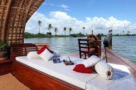
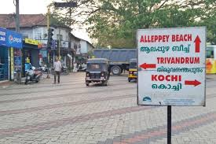
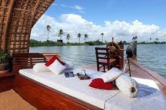
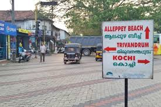
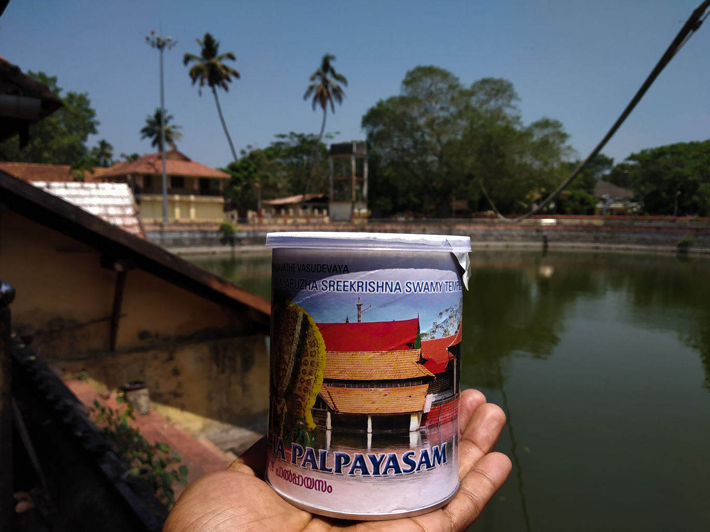
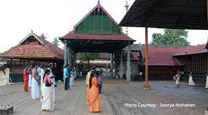
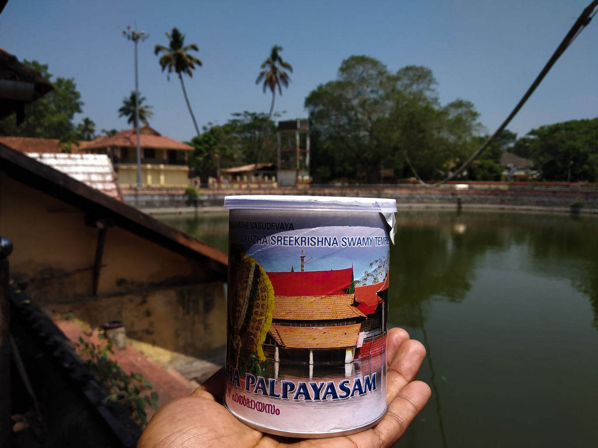
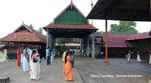

A Cochin to Alleppey & Marari Beach (3 Days)
In this private two day tour we pick the guest from Cochin city hotel or airport then transfer to Alleppey (Backwater of Kerala) where we provide 4 hr boat cruise with lunch on board. After cruising for 4 hr guests are transferred to Marari Beach for overnight stay and relax. We have kept day 2 free to relax on the beach and activities on the beach. Tour end on day 3 with return transfer to Cochin hotel or airport
 



 


